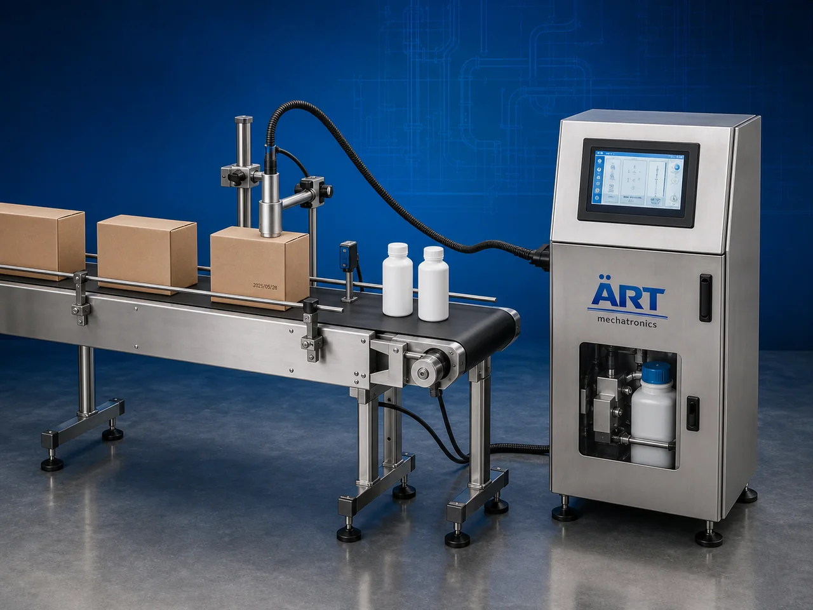

Batch Coding Machine (Automatic Date, Batch & Barcode Printing System)
A Batch Coding Machine, also known as a Date Coding Machine, Expiry Printing Machine, Product Marking Machine, or Industrial Coding System, is an advanced industrial printing solution designed for automatic batch number printing, manufacturing date coding, expiry date printing, MRP printing, barcode marking, QR code printing, serialization, variable data printing, and high-speed product coding operations across packaging and manufacturing industries.

About the Batch Coding
Batch coding systems are widely used for:
- Batch number printing
- Expiry date coding
- Manufacturing date printing
- Barcode and QR code printing
- Product traceability coding
- Variable data marking
- Packaging identification printing
- Industrial product coding operations
The machine improves:
- Product traceability
- Regulatory compliance
- Printing accuracy
- Production efficiency
- Product identification
- Packaging consistency
- Inventory management
Industrial batch coding machines use:
- CIJ continuous inkjet technology
- Thermal inkjet printing systems
- Laser coding systems
- Thermal transfer printing systems
- PLC synchronized automation controls
to automatically print high-quality variable information with superior precision and high-speed production efficiency.
Batch coding machines are widely used in industries such as:
Food processing industries Beverage industries Pharmaceutical industries Chemical industries Cosmetic industries Cable and pipe industries Electronics industries FMCG industries
where product traceability, legal compliance, and high-speed production are essential.
The machine is highly suitable for:
- Expiry date printing
- Batch coding operations
- QR and barcode marking
- Packaging identification systems
- Product traceability printing
- High-speed packaging line coding
ART Mechatronics offers high-performance batch coding machines, engineered for continuous industrial operation, precision coding performance, reliable print quality, and long-term industrial automation integration.
Working Principle of Batch Coding Machine
- 1. Product Feeding & Conveyor Synchronization Products are automatically transferred through synchronized conveyor systems for coding operation.
- 2. Data Processing & Print Setup Machine automatically processes coding data including batch numbers, expiry dates, QR codes, logos, and variable information before printing operation.
Intelligent synchronization ensures accurate print positioning and smooth production flow.
- 3. Coding & Printing Operation Machine handles printing on: ✔ Bottles ✔ Pouches ✔ Sachets ✔ Cartons ✔ Labels ✔ Cables ✔ Pipes ✔ Industrial products
accurately and continuously.
- 4. Product Coding & Marking Process Machine performs: Batch coding Expiry date printing Manufacturing date printing MRP printing QR code printing Barcode marking Serialization Traceability coding
for efficient and compliant industrial product identification.
- 5. Intelligent Automation & Inspection Integration Optional systems include: Vision inspection systems Barcode verification Database connectivity ERP integration Reject systems
- 6. Finished Product Discharge Printed products discharged automatically for: Packaging operations Warehouse storage Retail distribution Export shipment handling
Types of Batch Coding Machines
- 1. CIJ Batch Coding Machine Designed for: ✔ Ultra-high-speed industrial coding applications
- 2. Thermal Inkjet Batch Coding Machine Suitable for: ✔ High-resolution packaging printing systems
- 3. Laser Batch Coding Machine Uses: ✔ Permanent non-contact industrial marking operations
- 4. Thermal Transfer Overprinter (TTO) Designed for: ✔ Flexible packaging and film coding systems
- 5. Handheld Batch Coding Machine Suitable for: ✔ Portable industrial coding and marking applications
- 6. Fully Automatic Industrial Coding System Designed for: ✔ Complete packaging line automation operations
Industries Using Batch Coding Machines
🍅 Food Processing Industry Snacks, spices, edible oils, sauces, and food packaging coding systems. 🥤 Beverage Industry Bottle coding, can printing, and beverage packaging traceability systems. 💊 Pharmaceutical Industry Medicine packaging, serialization, and healthcare product coding systems. ⚗️ Chemical Industry Industrial containers, chemical packaging, and hazardous product coding systems. 🧴 Cosmetic & Personal Care Industry Perfumes, lotions, cosmetics, and retail packaging marking systems. 🛒 FMCG Industry Consumer products and retail packaging identification systems.
Features & Advantages
- High-speed industrial coding and printing operation
- Accurate and high-resolution print quality
- Contactless coding and laser marking systems
- PLC and conveyor synchronization integration
- Improves product traceability and compliance
- Reduces manual coding dependency
- Supports multiple packaging materials and products
- Reliable long-term industrial performance
- Smooth integration with packaging automation lines
Technical Highlights
Machine Type: Batch coding machine Industrial coding system Product marking machine Printing Technologies: CIJ printing systems Thermal inkjet systems Laser coding systems Thermal transfer printing systems Material Compatibility: Plastic Metal Glass Paper Cartons Pouches Labels Features: Touchscreen HMI PLC integration Variable data printing QR and barcode printing Database connectivity Applications: Batch coding Expiry printing MRP printing Traceability systems Industrial product marking Automation: Portable Semi-automatic Fully automatic industrial systems
Turnkey Batch Coding Solutions
ART Mechatronics offers: Complete industrial coding systems Automatic batch printing solutions Packaging line printing integration systems Conveyor synchronization systems Installation & commissioning After-sales service & AMC
Why Choose Art Mechatronics
Expertise in industrial printing and automation systems Customized coding solutions for multiple industries High-performance and precision printing technology Advanced PLC and intelligent automation systems Proven industrial coding performance across sectors
Applications
Food Processing Plants Beverage Manufacturing Facilities Pharmaceutical Packaging Industries Chemical Processing Units Cosmetic Manufacturing Plants FMCG Packaging Industries
Get pricing & specs for the Batch Coding
Share the product, target capacity, current process and plant location. These details help our engineers discuss the right machine or line configuration.
One partner, from design to start-up
ART Mechatronics designs, manufactures, installs and commissions your Batch Coding solution with regional presence in India, UAE and Thailand.